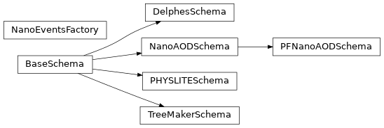

coffea.nanoevents
NanoEvents and helpers
Classes
|
A factory class to build NanoEvents objects |
|
Base schema builder |
|
NanoAOD schema builder |
|
PFNano schema builder |
|
TreeMaker schema builder |
|
PHYSLITE schema builder - work in progress. |
|
Delphes schema builder |
Class Inheritance Diagram
